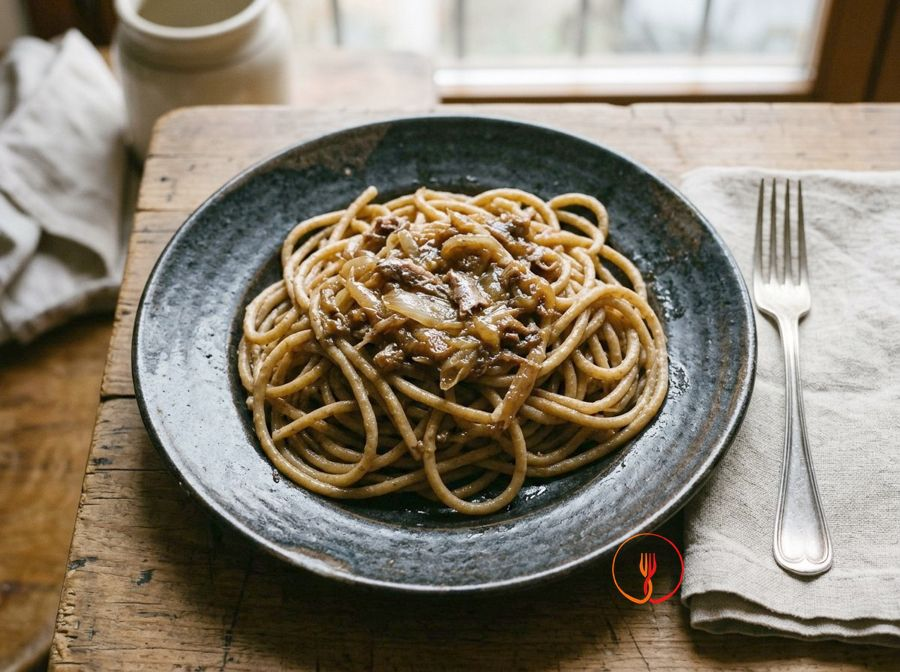

Bigoli in salsa
Pasta lunga e spessa veneta con salsa di cipolle stufate e acciughe.
Un piatto povero ma ricco di sapore della tradizione veneta, storicamente preparato per i giorni di magro. La lenta stufatura delle cipolle bianche crea una crema dolce che bilancia l'intensità delle acciughe sciolte nell'olio extravergine.
Ingredienti
- Bigoli360 g
- Cipolle bianche300 g
- Filetti di acciuga sott'olio60 g
- Olio extravergine d'oliva60 ml
- Acqua100 ml
- Sale fino4 g
Allergeni
Glutine, Pesce
Può contenere tracce di: Soia, Uova.
Procedimento
- Inizia mondando i 300 g di cipolle bianche e affettale in modo molto sottile, quasi trasparente, usando un coltello ben affilato. Questo passaggio è fondamentale perché la cipolla dovrà quasi sparire nella salsa durante la cottura, trasformandosi in una base dolce e vellutata senza pezzi grossolani.
- In un tegame ampio, versa i 60 ml di olio extravergine d'oliva e aggiungi le cipolle affettate. Accendi il fuoco a intensità molto bassa: le cipolle non devono soffriggere o dorarsi, ma solo iniziare a appassire lentamente per sprigionare i loro zuccheri naturali senza bruciare.
- Versa i 100 ml di acqua nel tegame con le cipolle e copri con un coperchio, lasciando stufare per circa 20 minuti a fiamma minima. Capirai che sono pronte quando saranno diventate tenerissime, traslucide e quasi ridotte in crema, avendo assorbito il liquido e perso ogni nota pungente.
- Aggiungi i 60 g di filetti di acciuga sott'olio alle cipolle stufate e mescola con un cucchiaio di legno. Premi delicatamente i filetti contro il fondo del tegame finché non si saranno sciolti completamente, creando una salsa omogenea dal colore ambrato e dal profumo intenso e sapido.
- Mentre la salsa finisce di insaporirsi, porta a bollore una pentola abbondante di acqua e aggiungi i 4 g di sale fino. Ti consiglio di usare poco sale poiché le acciughe sono già molto saporite e rischieresti di rendere il piatto troppo salato.
- Immergi i 360 g di bigoli nell'acqua bollente e cuocili secondo i tempi indicati sulla confezione, avendo cura di scolarli ben al dente. La consistenza ruvida e corposa di questa pasta è perfetta per catturare e trattenere la salsa di cipolle e acciughe.
- Scola i bigoli direttamente nel tegame del condimento, conservando un mestolino di acqua di cottura se necessario. Salta la pasta a fuoco vivace per circa 1 minuto, mescolando con energia affinché l'olio e l'amido creino un'emulsione setosa che avvolge perfettamente ogni spaghetto.
Consigli
- Affetta le cipolle molto sottilmente per far sì che si sciolgano quasi completamente durante la cottura lenta.
- Fai sciogliere i filetti di acciuga a fuoco dolcissimo per evitare che brucino e diventino amari.
- Scola i bigoli al dente e saltali brevemente nel tegame con la salsa per farli insaporire perfettamente.
Varianti
- Aggiungi una spolverata di pangrattato tostato in padella prima di servire per donare una nota croccante.
- Sfuma le cipolle con un goccio di vino bianco secco prima di aggiungere l'acqua per una nota più acida.
Valori nutrizionali (stima)
| Per porzione (260 g) | Per 100 g | |
|---|---|---|
| Energia | 2084 kJ / 498 kcal | 803 kJ / 192 kcal |
| Proteine | 16 g | 6.3 g |
| Carboidrati | 70 g | 27 g |
| di cui zuccheri | 5.7 g | 2.2 g |
| Grassi | 17 g | 6.7 g |
| di cui saturi | 2.6 g | 1.0 g |
| Fibre | 6.7 g | 2.6 g |
| Sale | 2.8 g | 1.1 g |
Valori stimati con l'AI su dati medi CREA / USDA: sono indicativi e non sostituiscono il parere di un medico o di un nutrizionista.
Apri la ricetta nell'app per la lista della spesa, le schede ingredienti e i negozi vicini.